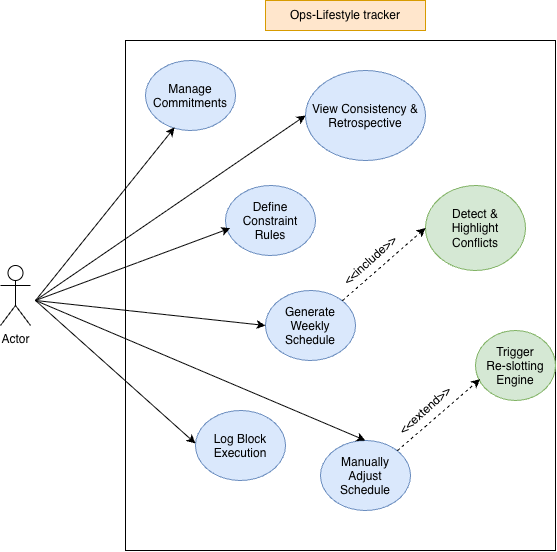
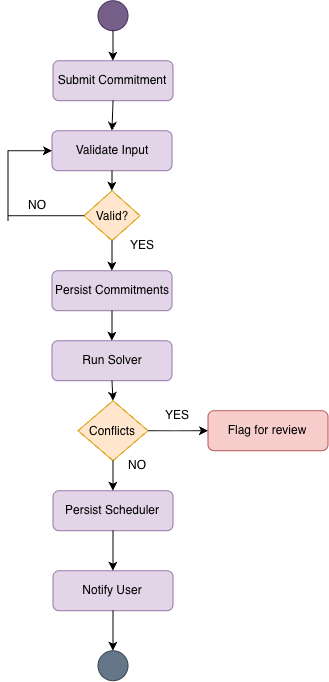
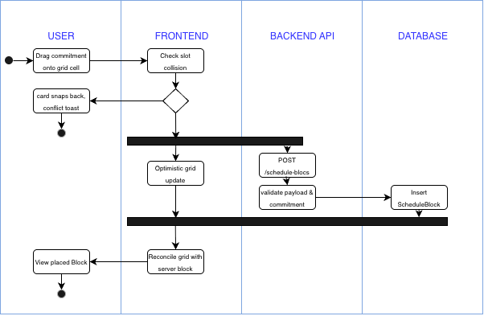
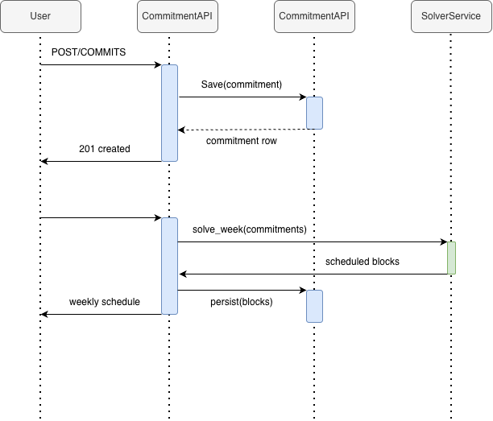
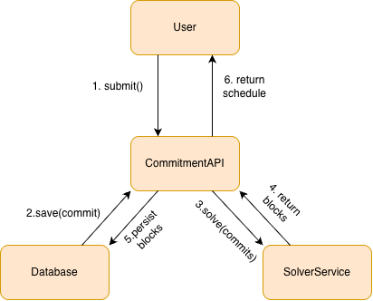

OPS-System Tracker
UCS 503 Software Engineering Project Report
Mid-Semester Evaluation
Submitted by:
(1024030698) Udaypratap Singh
BE Third Year, CoE
Group No: 3C41
Submitted to:
Mrs. Nisha Thakur
Computer Science and Engineering Department
TIET, Patiala
| S.No. | Assignment | Page No. |
|---|---|---|
| 1. | Project Selection Phase | __P_1__ |
| 1.1 Software Bid | __P_1_1__ | |
| 1.2 Project Overview | __P_1_2__ | |
| 2. | Analysis Phase | __P_2__ |
| 2.1 Use Cases | __P_2_1__ | |
| 2.1.1 Use-Case Diagram | __P_2_1_1__ | |
| 2.1.2 Use Case Templates | __P_2_1_2__ | |
| 2.2 Activity Diagram and Swimlane Diagram | __P_2_2__ | |
| 2.2.1 Activity Diagram | __P_2_2_1__ | |
| 2.2.2 Swimlane Diagram | __P_2_2_2__ | |
| 2.3 Sequence and Collaboration Diagrams | __P_2_3__ | |
| 2.3.1 Sequence Diagram | __P_2_3_1__ | |
| 2.3.2 Collaboration Diagram | __P_2_3_2__ | |
| 2.4 Software Requirement Specification in IEEE Format | __P_2_4__ | |
| 2.5 User Stories and Story Cards | __P_2_5__ |
OPS-System Tracker: A Rules-Driven Personal Life-Systems Scheduler and Retrospective Engine.
Most productivity tools treat a person's time as an endless list of checkboxes. In reality, a student's week is made up of fixed obligations (lectures, labs), recurring targets (gym 4 times a week, daily study blocks) and one-off deadlines that all compete for the same limited hours. Existing to-do apps and calendars have the following problems:
OPS is a single-user web application that treats weekly planning as a constraint-satisfaction problem. The user enters their commitments and rules once; the system then automatically slots flexible work into a weekly grid of 50-minute blocks around the fixed events, lets the user adjust the plan by drag-and-drop, records what was actually completed, and generates a weekly retrospective. The main modules are:
| Layer | Technology |
|---|---|
| Frontend | React 18 with TypeScript, dnd-kit for drag-and-drop, Vite |
| Backend API | FastAPI (Python 3.12), Pydantic v2 for validation |
| Scheduling Engine | Custom pure-Python constraint solver (no external solver library) |
| Database | SQLite (development) / PostgreSQL, SQLAlchemy 2.0 ORM, Alembic migrations |
| Testing & CI | Pytest, GitHub Actions |
| Version Control | Git and GitHub |
| Phase | Duration | Deliverables |
|---|---|---|
| Month 1 | Weeks 1 - 4 | Relational schema (commitments, constraint rules, scheduled blocks, execution logs); standalone scheduling module with pytest suite; REST endpoints for CRUD and schedule solving; CI pipeline. |
| Month 2 | Weeks 5 - 8 | React weekly canvas with 50-minute grid; drag-and-drop placement with collision detection; solver integration and manual override handling. |
| Month 3 | Weeks 9 - 12 | Execution logging; rolling weekly streak and compliance metrics; automated weekly retrospective dashboard; final testing and documentation. |
| Risk | Mitigation |
|---|---|
| Infeasible constraint combinations (deadlock) | Priority fallback queue; unplaced items are reported to the user as alerts rather than silently dropped. |
| Drag-and-drop complexity in the UI | Use the mature dnd-kit library with a discrete 50-minute snap grid so there are no continuous-time coordinate bugs. |
| Scope creep | Multi-user authentication and external calendar sync are explicitly excluded for the 12-week window. |
OPS-System Tracker is a personal "life operating system" for a single user. Instead of a passive list of tasks, it models the user's week the way it actually works: as a fixed number of time blocks into which fixed obligations, recurring routines and flexible work must fit. The system is designed around four ideas:
| Type | Description and Examples |
|---|---|
| FIXED_EVENT | Immovable events placed at an exact day and slot. Lectures, labs, exams, appointments. |
| RECURRING_QUOTA | Sessions that must happen N times a week, with optional preferences. Gym 4x/week, meditation daily. |
| FLEXIBLE_TASK | Ranked backlog items that fill leftover capacity. DSA practice, project work, reading. |
| HARD_DEADLINE | One-off deliverables scheduled backwards from a due date. Assignment submissions, report drafts. |
The application is a standard three-tier web system. The React frontend renders the weekly canvas and communicates with the FastAPI backend over JSON REST APIs. The backend exposes routers for commitments, constraint rules, scheduled blocks, execution logs and the schedule solver. The solver is a separate pure-Python module so it can be unit-tested independently of the web layer. All data is persisted through SQLAlchemy to a relational database (SQLite during development).
The system has a single actor, the User, who owns all commitments and schedules. The main use cases are managing commitments, defining constraint rules, generating the weekly schedule, manually adjusting the schedule, logging block execution and viewing the consistency and retrospective view. Conflict detection is always included when a schedule is generated, and the re-slotting engine may be triggered when the user manually adjusts the schedule.

| Use Case UC-1: Manage Commitments | |
|---|---|
| Actor | User |
| Description | The user creates, edits and deletes commitments (fixed events, recurring quotas, flexible tasks, hard deadlines). |
| Preconditions | The application is running and the user has opened the commitments panel. |
| Main Flow |
1. User selects "Add commitment". 2. User enters title, type, duration (in blocks), weekly target and priority. 3. System validates the input. 4. System saves the commitment and returns it to the list. |
| Alternate Flow | 3a. Validation fails (e.g. empty title, duration < 1). System shows an error and the user corrects the input. 1b. User chooses an existing commitment and edits or deletes it instead. |
| Postconditions | The commitment list in the database reflects the change. |
| Use Case UC-2: Define Constraint Rules | |
|---|---|
| Actor | User |
| Description | The user attaches rules to a commitment that guide where the solver may place it, such as time-of-day affinity, minimum spacing between sessions or a fixed slot. |
| Preconditions | At least one commitment exists. |
| Main Flow |
1. User selects a commitment and chooses "Add rule". 2. User picks the rule type, target slot/day and strictness (hard or soft). 3. System validates and stores the rule linked to the commitment. |
| Alternate Flow | 3a. The rule conflicts with an existing hard rule; the system rejects it and explains why. |
| Postconditions | The rule is stored and will be considered on the next schedule generation. |
| Use Case UC-3: Generate Weekly Schedule | |
|---|---|
| Actor | User |
| Description | The solver produces a full weekly schedule from the stored commitments and rules. Includes UC-3a (Detect and Highlight Conflicts). |
| Preconditions | Commitments and rules are saved. |
| Main Flow |
1. User requests the schedule for the week. 2. System loads commitments and rules. 3. Solver places fixed events, then recurring quotas, then deadlines, then flexible tasks. 4. System checks for slot conflicts. 5. System persists the scheduled blocks and displays them on the weekly canvas. |
| Alternate Flow | 4a. Some items cannot be placed without conflict; the system highlights them and flags the schedule for review instead of persisting the conflicting blocks. |
| Postconditions | A valid, conflict-free weekly schedule is stored, or the unplaced items are reported. |
| Use Case UC-4: Manually Adjust Schedule | |
|---|---|
| Actor | User |
| Description | The user drags a commitment or block to a different grid cell. May extend to UC-4a (Trigger Re-slotting Engine) for the remaining flexible blocks. |
| Preconditions | A weekly schedule is displayed on the canvas. |
| Main Flow |
1. User drags a card onto a grid cell. 2. Frontend checks that the slot is free. 3. Frontend updates the grid optimistically and sends the new block to the backend. 4. Backend validates and inserts the block. 5. Frontend reconciles the grid with the server response. |
| Alternate Flow | 2a. The slot is already occupied; the card snaps back and a conflict message is shown. 5a. The user chooses "re-slot flexible"; the engine re-places the remaining flexible tasks around the manual change. |
| Postconditions | The block is stored at the new position; no two blocks share a slot. |
| Use Case UC-5: Log Block Execution | |
|---|---|
| Actor | User |
| Description | The user marks a scheduled block as completed, skipped or partially done, optionally with notes. |
| Preconditions | The block exists in the current week's schedule. |
| Main Flow |
1. User opens a block and selects a status. 2. System creates an execution log entry linked to the block. 3. System updates the block status and weekly compliance counters. |
| Alternate Flow | 1a. User edits an earlier log entry; the system updates it and recomputes the counters. |
| Postconditions | The execution log and compliance metrics reflect the actual work done. |
| Use Case UC-6: View Consistency and Retrospective | |
|---|---|
| Actor | User |
| Description | The user views weekly compliance rates, rolling streaks and the planned-vs-executed comparison for a completed week. |
| Preconditions | At least one week of scheduled blocks and execution logs exists. |
| Main Flow |
1. User opens the review dashboard and selects a week. 2. System aggregates logs per commitment and computes compliance = completed / target. 3. System displays the metrics, streak status and missed patterns. |
| Alternate Flow | 2a. No logs exist for the week; the system shows an empty state. |
| Postconditions | No data is changed; the review is read-only. |
The activity diagram below shows the end-to-end flow of submitting a commitment and generating a schedule. Input is validated in a loop until it is correct, the commitment is persisted, the solver is run, and if conflicts are found the schedule is flagged for review; otherwise the schedule is persisted and the user is notified.

The swimlane diagram shows the responsibilities of the User, Frontend, Backend API and Database during a drag-to-schedule action. The frontend performs a local collision check first; if the slot is free it updates the grid optimistically while the backend validates and inserts the block in parallel, and the grid is finally reconciled with the server's response.

The sequence diagram covers the two main interactions with the Commitment API: creating a commitment (POST /commitments, which is saved and returns 201 Created) and requesting the weekly schedule, where the API calls the Solver Service, receives the scheduled blocks, persists them and returns the weekly schedule to the user.

The collaboration diagram shows the same interaction from the point of view of the objects involved. The numbered messages give the order: the user submits, the API saves the commitment to the database, calls the solver, receives blocks, persists them and finally returns the schedule.

1.1 Purpose. This document specifies the software requirements for OPS-System Tracker, a single-user web application for constraint-based weekly scheduling and consistency tracking. It is intended for the developer and the evaluating faculty.
1.2 Scope. The system allows a user to record commitments and rules, automatically generate a weekly schedule of 50-minute blocks, adjust it by drag-and-drop, log what was executed and review weekly consistency. Multi-user accounts, authentication and external calendar synchronisation are out of scope for this version.
1.3 Definitions and Abbreviations.
| Term | Meaning |
|---|---|
| Block / Slot | A 50-minute unit of the weekly grid, identified by day of week and slot index. |
| Commitment | Anything that needs time in the week: fixed event, recurring quota, flexible task or hard deadline. |
| Constraint Rule | A rule attached to a commitment that restricts where the solver may place it. |
| Scheduled Block | A commitment placed at a specific day and slot. |
| Execution Log | A record of whether a scheduled block was actually completed. |
| Solver | The scheduling engine that assigns commitments to blocks. |
| API, REST, CRUD, ORM | Application Programming Interface; Representational State Transfer; Create-Read-Update-Delete; Object-Relational Mapping. |
1.4 References. IEEE Std 830-1998, Recommended Practice for Software Requirements Specifications; FastAPI documentation; React and dnd-kit documentation; project proposal (UCS503P, August 2026).
1.5 Overview. Section 2 gives an overall description of the product; Section 3 lists the specific functional, interface and non-functional requirements.
2.1 Product Perspective. OPS is a self-contained web application with three tiers: a React frontend, a FastAPI backend that contains the scheduling engine, and a relational database accessed through SQLAlchemy. It does not depend on any external service.
2.2 Product Functions.
2.3 User Characteristics. A single user, typically a student, who is comfortable with web applications. No technical knowledge of scheduling algorithms is required.
2.4 Constraints. The solver must be implemented in pure Python without external solver libraries. The week is fixed at 7 days and blocks are fixed at 50 minutes. The application runs in a modern desktop browser.
2.5 Assumptions and Dependencies. The user has Python 3.12, Node.js and a modern browser available. Only one user uses the system at a time, so no concurrency control between users is needed.
3.1 External Interface Requirements
| Endpoint | Purpose |
|---|---|
GET/POST /commitments, GET/PATCH/DELETE /commitments/{id} | Commitment CRUD |
GET/POST /constraint-rules, GET/PATCH/DELETE /constraint-rules/{id} | Constraint rule CRUD |
GET/POST /scheduled-blocks, GET/PATCH/DELETE /scheduled-blocks/{id} | Scheduled block CRUD (used by drag-to-schedule) |
GET/POST /execution-logs, GET/PATCH/DELETE /execution-logs/{id} | Execution log CRUD |
GET /schedule, POST /schedule/solve, POST /schedule/reslot-flexible | Retrieve the current schedule, run the solver, re-slot flexible tasks |
3.2 Functional Requirements
| ID | Requirement |
|---|---|
| FR-1 | The system shall allow the user to create a commitment with a title, type (FIXED_EVENT, RECURRING_QUOTA, FLEXIBLE_TASK, HARD_DEADLINE), duration in blocks, weekly target and priority. |
| FR-2 | The system shall allow the user to view, edit and delete existing commitments. |
| FR-3 | The system shall validate all commitment and rule input and reject invalid data with a descriptive error. |
| FR-4 | The system shall allow the user to attach constraint rules (time-of-day affinity, minimum spacing, fixed slot) with hard or soft strictness to a commitment. |
| FR-5 | The system shall generate a weekly schedule by placing fixed events first, then recurring quotas, then hard deadlines, then flexible tasks. |
| FR-6 | The system shall never place two scheduled blocks in the same day and slot. |
| FR-7 | The system shall report any commitment that could not be placed instead of silently dropping it. |
| FR-8 | The system shall display the weekly schedule on a 7-day by 50-minute grid. |
| FR-9 | The system shall allow the user to drag a commitment onto a grid cell to create a scheduled block, and shall refuse the drop with a visible message if the cell is occupied. |
| FR-10 | The system shall persist manually placed blocks to the backend and reconcile the grid with the server response. |
| FR-11 | The system shall allow the user to re-slot the remaining flexible tasks after a manual change without moving fixed events or manually placed blocks. |
| FR-12 | The system shall allow the user to log a scheduled block as completed, skipped or partial, with optional notes. |
| FR-13 | The system shall compute, for each recurring quota, the weekly compliance rate = completed sessions / target sessions. |
| FR-14 | The system shall maintain a rolling streak that increments only when the weekly compliance rate is 100% and decays only when a full week closes below the target. |
| FR-15 | The system shall produce a weekly retrospective comparing planned blocks against logged execution. |
3.3 Non-Functional Requirements
| ID | Category | Requirement |
|---|---|---|
| NFR-1 | Performance | Schedule generation for a week with 40 or more constraints shall complete in under 100 ms (median), so that re-slotting feels instant on the canvas. |
| NFR-2 | Reliability | The solver shall be deterministic: identical input shall always produce an identical schedule. |
| NFR-3 | Correctness | The solver and API shall be covered by automated pytest test suites that run on every commit through CI. |
| NFR-4 | Usability | Placing a block shall require a single drag-and-drop action; conflicts shall be communicated immediately with a visible message. |
| NFR-5 | Maintainability | The solver shall be a separate module from the API layer so it can be tested and benchmarked in isolation. |
| NFR-6 | Portability | The backend shall run on any system with Python 3.12; the database shall be switchable between SQLite and PostgreSQL through configuration. |
| NFR-7 | Data Integrity | All schema changes shall be applied through Alembic migrations; foreign keys shall link blocks to commitments and logs to blocks. |
User stories are written from the point of view of the single user of the system. Each story card lists a priority (High / Medium / Low), an estimate in story points and the acceptance criteria used to check it.
| ID | User Story | Priority |
|---|---|---|
| US-1 | As a user, I want to add my fixed classes and labs so that the scheduler never puts other work on top of them. | High |
| US-2 | As a user, I want to set a weekly target for recurring activities like the gym so that the system plans enough sessions for me. | High |
| US-3 | As a user, I want to add rules such as "gym only in the evening" so that the generated schedule matches my preferences. | Medium |
| US-4 | As a user, I want the system to generate my whole week automatically so that I do not have to plan it by hand. | High |
| US-5 | As a user, I want to drag a task onto a grid cell so that I can quickly place or move work myself. | High |
| US-6 | As a user, I want to be warned when I drop a task on an occupied slot so that I do not double-book myself. | High |
| US-7 | As a user, I want the remaining flexible tasks to be re-slotted after I move something so that my plan stays valid. | Medium |
| US-8 | As a user, I want to mark a block as done or skipped so that the system knows what actually happened. | High |
| US-9 | As a user, I want to see how many of my weekly targets I hit so that I can judge my consistency fairly. | Medium |
| US-10 | As a user, I want an end-of-week summary of planned vs. done blocks so that I can spot patterns and adjust next week. | Low |
US-1: Add fixed commitments | Priority: High | Estimate: 3 points
Story: As a user, I want to add my fixed classes and labs so that the scheduler never puts other work on top of them.
Acceptance criteria:
US-2: Set weekly targets | Priority: High | Estimate: 3 points
Story: As a user, I want to set a weekly target for recurring activities so that the system plans enough sessions for me.
Acceptance criteria:
US-4: Generate weekly schedule | Priority: High | Estimate: 8 points
Story: As a user, I want the system to generate my whole week automatically so that I do not have to plan it by hand.
Acceptance criteria:
US-5 / US-6: Drag-to-schedule with conflict check | Priority: High | Estimate: 5 points
Story: As a user, I want to drag a task onto a grid cell and be warned if the slot is taken so that I can place work quickly without double-booking.
Acceptance criteria:
US-8: Log block execution | Priority: High | Estimate: 3 points
Story: As a user, I want to mark a block as done or skipped so that the system knows what actually happened.
Acceptance criteria:
US-9: View weekly consistency | Priority: Medium | Estimate: 5 points
Story: As a user, I want to see how many of my weekly targets I hit so that I can judge my consistency fairly.
Acceptance criteria: